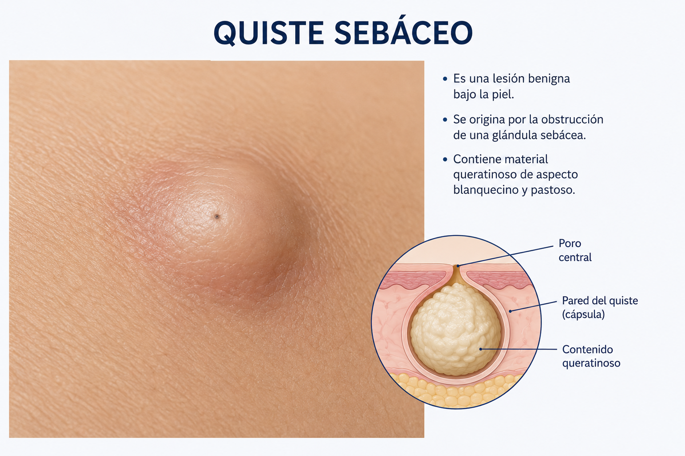
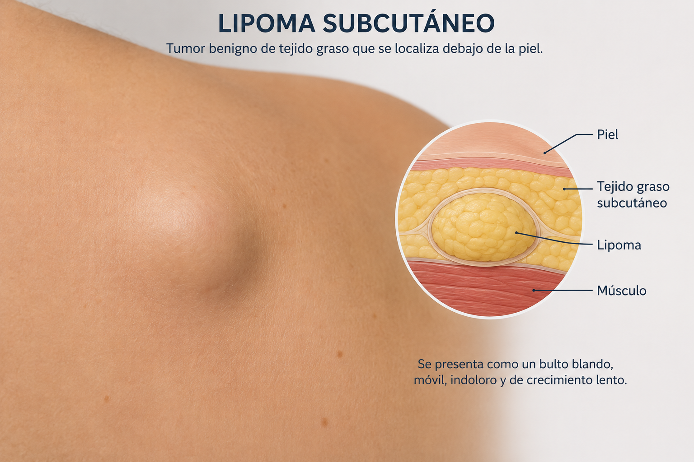
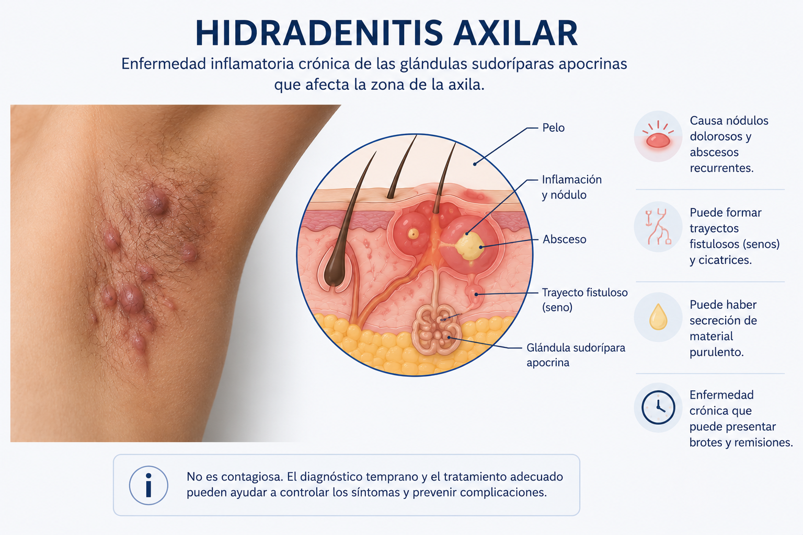
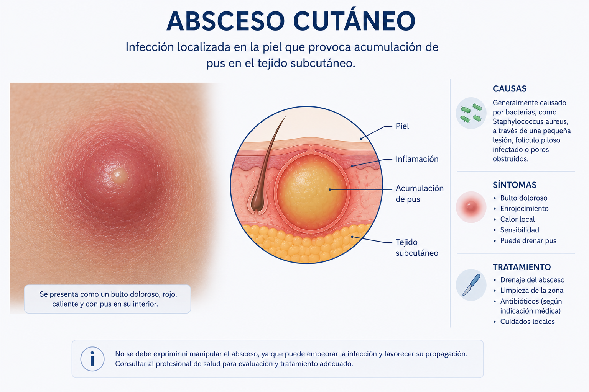
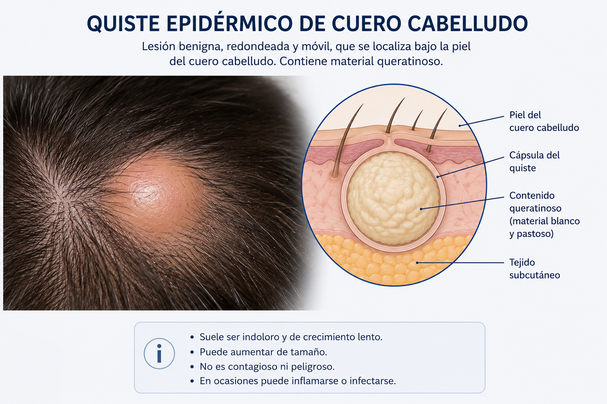
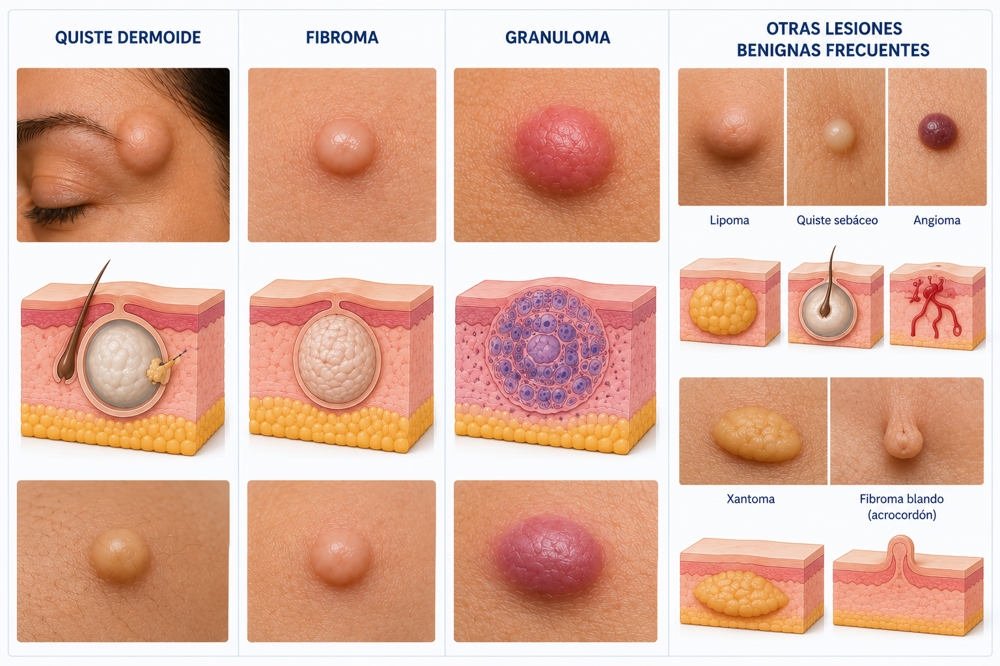

What is minor surgery?
Minor surgery encompasses a range of outpatient surgical procedures that allow the removal of benign skin and subcutaneous tissue lesions under local anaesthesia, without the need for hospital admission or general anaesthesia.
Dr. Jaime Jorge Cerrudo performs a differential diagnosis of any lesion before proceeding with its removal, to rule out malignancy and determine the most appropriate treatment in each case.
Important: any new lesion, one that is growing rapidly, or one that has changed in appearance should be assessed by a specialist. Dr. Jaime Jorge Cerrudo carries out a differential diagnosis at the first consultation, sending the excised specimen for histopathological analysis whenever necessary.
Lesions treated with minor surgery

Sebaceous cyst
Accumulation of sebum beneath the skin that forms a soft, well-defined nodule. It can become inflamed and infected if left untreated.

Lipoma
Benign tumour of fatty tissue, soft and mobile. It does not usually cause pain but may cause discomfort due to its size or location.

Hidradenitis
Chronic inflammatory disease of the apocrine sweat glands. It causes nodules, abscesses and fistulous tracts that can be surgically removed.

Cutaneous abscess
Collection of pus in the subcutaneous tissue that requires drainage under local anaesthesia to relieve pain and prevent the infection from spreading.

Epidermal cyst of the scalp
Common benign cystic lesion of the scalp. Removal under local anaesthesia resolves the problem definitively with an excellent cosmetic outcome.

Other cutaneous lesions
Dermoid cysts, fibromas, granulomas and other benign subcutaneous lesions suitable for removal under local anaesthesia.
Excision procedure
All minor surgery procedures are performed on an outpatient basis under local anaesthesia, with same-day discharge and no need for hospital admission.
Examination and differential diagnosis at the consultation
Infiltrative local anaesthesia in the area to be treated
Excision of the lesion using a scalpel or electrosurgery
Submission to histopathology where indicated
Minor surgery under local anaesthesia
Dr. Jaime Jorge Cerrudo performs the diagnosis and excision of benign lesions in the same consultation where possible, with immediate discharge and follow-up as required.
Local anaesthesia — no hospital admission
Same-day discharge
Histopathological analysis when necessary
Recovery within a few days
Cosmetic outcome: how we care for the scar
A good scar starts long before any cream is applied. In minor aesthetic surgery, the final result depends above all on careful surgical technique, tension-free closure, and appropriate care during the weeks that follow.
During the procedure
Incision planning — following the natural tension lines of the skin so that the scar is as discreet as possible.
Minimally traumatic technique — fine instruments to minimise tissue damage, reduce inflammation and avoid unnecessary marks.
Precise haemostasis — careful control of bleeding reduces the risk of haematoma and improves healing.
Layered closure — tension is relieved at deep tissue planes using absorbable internal sutures, preventing the scar from widening.
Aesthetic sutures — suturing techniques adapted to each body area for a fine, even closure.
Early suture removal — at the right moment to prevent visible marks on the skin.
Post-operative care
Steri-Strips or Micropore tape — adhesive strips that relieve tension on the scar and reduce the risk of widening.
Sun protection — SPF 50+ for several months to prevent the scar from darkening due to sun exposure.
Silicone gel or sheets — the treatment with the strongest scientific evidence for scar improvement, especially in skin prone to hypertrophic scarring.
Our goal: in addition to removing the lesion safely, we aim to achieve a scar that is fine, discreet, stable over time, and as aesthetically pleasing as possible. Every skin heals differently — we provide personalised follow-up to detect any abnormality early and optimise the outcome.